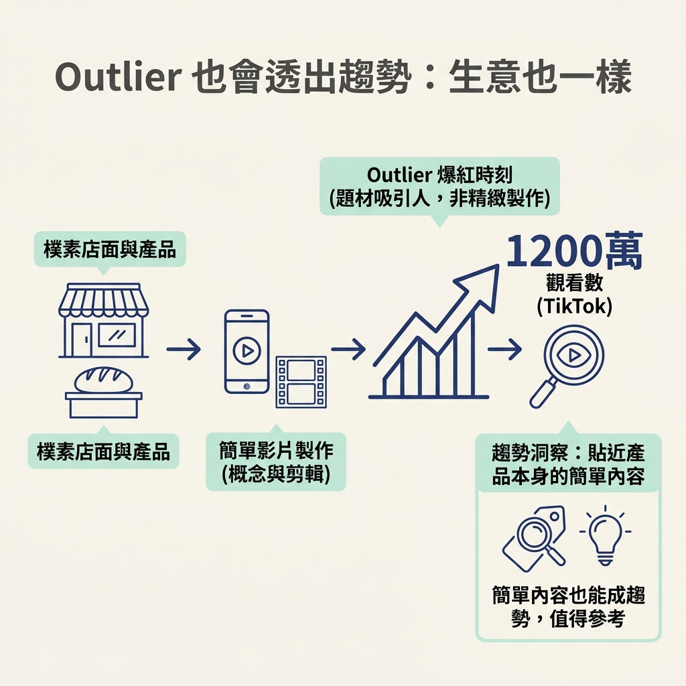

在整套內容發想流程裡，上一課的 /latest 幫你找出「現在大家在聊什麼」；這一節則進一步找出「什麼題材真的比平常更有效」。你會拿帳號平常的觀看表現來對照個別貼文，找出表現特別突出的題材，當作後續發想的線索。
看完這一節，你能用自己的話說明：outlier 是一篇貼文的表現明顯高過自己帳號平常水準，也能解釋為什麼觀看數高，不一定代表它是 outlier。
先想像你在 YouTube 上看到一支影片，有三萬三千次觀看。你可能覺得「好像也還好」，就滑過去了。但如果再知道兩件事：這個頻道平常一支影片大約只有四千次觀看，而且總共才六千個訂閱者呢？
同一支影片，只要換個角度看，意義就不一樣了。這一節要介紹的，就是怎麼把個別貼文放回帳號平常的表現裡比較，找出值得注意的題材。
Outlier（表現異常突出的貼文）是指一篇明顯超過帳號平常水準的內容。課程裡用一句話概括：outlier 就是「posts that beat their normal」，也就是「打敗自己平常表現的貼文」。
這個定義有兩個重點：比的是「自己的」帳號，不是拿來和別人比；比的是帳號「平常」的表現，不是只看貼文的觀看數有多大。
因此，判斷時要看一篇貼文相對於帳號平常表現高出多少。觀看數本身很大，不代表它一定突出；數字看起來不大，也可能遠遠超過帳號平常的水準。
回到開頭的例子：一支影片拿到三萬三千次觀看。若只看絕對數字，它比起動輒幾十萬、上百萬觀看的熱門影片，似乎不太起眼。
但這個帳號當時大約有六千名訂閱者，平常的觀看數約四千。三萬三千次觀看，接近平常水準的八倍。這就值得注意：影片觸及的觀眾比平常多得多，表示這個題材可能打中了觀眾，值得進一步研究。
這裡的「八倍」是根據數字算出來的，不是憑感覺判斷。倍數的算法會在下一節說明。
反過來看，也能更清楚理解這個概念。課程以 Chris Williamson 為例：他是 Podcast 領域的大型頻道，平常一支影片大約有五十萬次觀看。
如果他有支影片拿到五十萬次觀看，絕對數字雖然很大，對他的帳號來說卻只是平常水準，倍數是一倍，並不算 outlier。若某支影片衝到一百萬次觀看，也就是平常的兩倍，才算表現明顯突出。
| 帳號 | 平常水準 | 這支影片 | 倍數 | 算 outlier 嗎？ |
|---|---|---|---|---|
| Morin Trades | 約 4,000 | 33,000 | 將近 8 倍 | 算，訊號很清楚 |
| Chris Williamson | 約 500,000 | 500,000 | 1 倍 | 不算，一如往常 |
| Chris Williamson | 約 500,000 | 1,000,000 | 2 倍 | 算，明顯異常 |
把兩組例子放在一起看，判斷的標準就很清楚了：要看貼文相對於帳號平常表現的倍數，而不是只看觀看數。大型帳號拿到高觀看數，可能只是日常表現；單看數字，無法知道題材是否特別吸引人。
這種看法對剛起步的創作者尤其實用。如果把「一百萬次觀看」當成成功門檻，小帳號的影片很容易顯得不夠好，讓人覺得目標遠在天邊。
換成比較自己的平常表現，標準就更貼近實際：如果一個題材的表現比日常高出好幾倍，它就是值得留意的訊號。你不必追著百萬觀看跑，而是可以先找出哪些題材相對於自己的帳號，表現特別好。這是小創作者也能拿來觀察的標準。
這個概念也能用來觀察生意和趨勢。課程舉了一個例子：菲律賓馬尼拉一家在地麵包店的 TikTok，有一支影片衝到一千兩百萬次觀看。
影片做法很簡單：概念簡單、剪輯也簡單，主要是店主介紹自家的產品。很多人看它，並不是因為製作特別精緻，而是題材本身吸引人。用 outlier 的角度來看，這也是一篇超過帳號平常水準的貼文。從生意的角度看，這個例子也讓人注意到：貼近產品本身的簡單內容，也可能值得參考。

所以，這一節是在教你換一副眼鏡：別只問「這支影片紅不紅」，也要問「它比這個帳號平常的表現高出多少」。你在觀察多個帳號時，也能留意哪些題材反覆出現、表現突出，當作市場回應的線索。
Outlier 不是「觀看數很大的貼文」，而是「表現超過自己帳號平常水準的貼文」。平常只有約四千次觀看的帳號，某支影片拿到三萬三千次，接近八倍，是清楚的訊號；平常就有五十萬次觀看的頻道，拿到五十萬次只是維持日常，並不突出。判斷時要看相對倍數，而不是絕對數字。這套比較方式也能用來觀察生意和趨勢。
現在你知道，outlier 的關鍵是「相對於平常高出多少」。下一節會把倍數的算法攤開來看，並比較兩種計算方式：使用現成工具，或免費自己算。